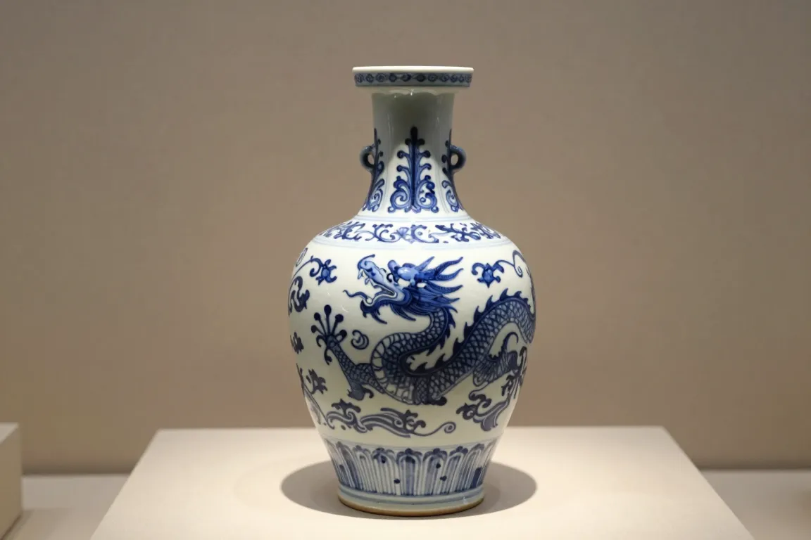

Hvitt porselen malt i koboltblått under en klar glasur. Pottemakere i Jingdezhen laget det under Yuan-dynastiet og foredlet det for Ming-hoffet til verdens best kjente keramikk.

Kjerneidé
Koboltblått malt rett på hvitt porselen og forseglet under en klar glasur gir et varig bilde som verken kan gnis av eller blekne.
Designprinsipper
Mal koboltoksid på det tørre, ubrente legemet med en myk pensel, og dypp så i en klar glasur.
Brenn én gang ved 1280 til 1330 °C i en sterk flamme, slik at porselenet blir hvitt og tett.
Del flaten i bånd: et hovedfelt, et skulderbånd og en fotbort av lapper eller bølger.
I Yuan-stilen fylles feltet med tette bånd; i Ming-stilen står mer hvit bunn igjen.
Tegn drager, lotusranker, fønikser, blomster og landskap i kontur og lavering.
Bruk en dyp blå med mørke flekker i det tidlige arbeidet, og en ren, myk blå i det senere Ming-arbeidet.
Skriv regjeringsmerket med seks tegn i en ring eller en firkant under bunnen.
Antimønstre
Brunt eller rødt leirgods som viser ved foten
Sterke overglasuremaljer som hovedfarge
En tykk dekkende hvit tinnglasur
Et grått eller uklart legeme fra en svak brenning
Overføringstrykt mønster med identiske gjentakelser